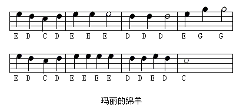
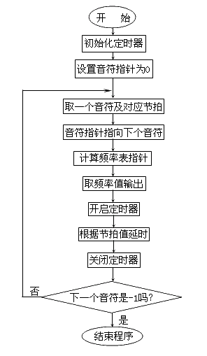

掌握了控制频率和时间的方法，就可以编制出演奏音乐的程序了。请看下面的乐谱：

识谱的朋友马上就能唱出这段旋律，将程序MUSIC.ASM编译并运行，计算机也会为你奏出这首动听的歌。
DATA SEGMENT ASSUME DS:DATA FREQ DW 0,4552,4029,3617,3415 DW 3042,2710,2415,2279 ；定义各频率对应的N值 NOTE DB 3,2,1,2,3,3,3,2,2,2 DB 3,5,5,3,2,1,2,3,3,3 DB 3,2,2,3,2,1,-1 ；定义乐谱,-1表示结束 DL_TIME DB 4,4,4,4,4,4,8,4,4,8 DB 4,4,8,4,4,4,4,4,4,4 DB 4,4,4,4,4,8 ；定义各音符的节拍 DATA ENDS CODE SEGMENT ASSUME CS:CODE MAIN PROC FAR MOV AX,DATA ；取数据段地址 MOV DS,AX ；设定DS MOV AL,10110110B OUT 43H,AL ；初始化8253 TIMER 2 ;------------------------------------- PLAY: MOV BX,0 ；设定音符数组下标初值 MOV AL,NOTE[BX] ；取一个音符 MOV AH,DL_TIME[BX] ；取对应节拍 INC BX ；数组指针加1 PUSH BX ；保存音符指针 PUSH AX ；保存节拍值 CBW ；将音符转为16位 SHL AX,1 ；音符值×2,计算频率表指针 MOV BX,AX ；频率表指针置入BX MOV AX,FREQ[BX] ；取出对应频率值 ;------------------------------------- OUT 42H,AL ；输出频率值 MOV AL,AH OUT 42H,AL IN AL,61H ；开启定时器 OR AL,3 OUT 61H,AL MOV AH,0 ；取时钟计数值 INT 1AH POP AX ；取回节拍值 MOV AL,AH CBW ；节拍值转为16位 ADD AX,DX ；加上当前时钟计数值,得到计数终值 MOV BX,AX ；计数终值置入BX DELAY: MOV AH,0 INT 1AH ；取时钟计数值 CMP BX,DX ；到终值吗? JNZ DELAY ；未到,继续延时 IN AL,61H ；延时结束,关闭定时器 AND AL,0FCH OUT 61H,AL POP BX ；取回音符数组指针 CMP NOTE[BX],-1 ；演奏结束吗? JNZ PLAY ；未结束,继续演奏下一个音符 MOV AH,4CH ；选择DOS API的4CH功能 INT 21H ；终止进程,返回DOS MAIN ENDP CODE ENDS END MAIN
程序中多了两个新的指令--CBW和SHL，同时还有一个新的伪指令──DW（Define Word）。这个伪指令的作用同DB类似，只不过它用来定义十六位数据，也就是一个"字"。
助记符：CBW（Convert Byte to Word）
用 途：将AL寄存器中的一字节数据转换成一个字，高八位扩展到AH中
格 式：CBW
执 行：AL的低7位状态不变，最高位被扩展成八位并存入AH寄存器中
此指令用于将八位数据转换成十六位，而且数的大小不变。转换过程并不复杂：如果AL寄存器的最高位（bit7）为0，则AH寄存器就被置成00H；如果AL寄存器的最高位为1，那么AH寄存器就被置成0FFH。例如若AL为0FH，AH为01H，则执行CBW指令后AX寄存器将是000FH；若AL为0F0H，AH为01H，则执行CBW后AX寄存器将是0FFF0H。
"有没有搞错啊！0F0H和0FFF0H可能相等吗？"
先不要惊奇，粗看上去这两者并不一样，但它们的确相等。现在我们先记住这个结论，详细的情况将在下面讨论。
助记符：SHL（Shift Left）
用 途：将寄存器或存储器中的数据向左移位
格 式：SHL 寄存器，1
SHL 寄存器，CL
SHL 存储单元，1
SHL 存储单元，CL
执 行：寄存器或存储器中的数据所有位都向左移动一位或CL寄存器中指定位数，最高位移入CF标志
SHL指令和前面所讲的SHR指令功能是相对的，这个指令在程序中的应用很特别，实际上程序是应用了移位的性质，即将一个数向左移一位相当于将这个数乘2，左移两位相当于乘4，而左移三位相当于乘8。同样向右移一位则相当于除以2，右移两位相当于除以4。
这个规律很容易验证：将1（0001b）左移两位可得0100b，恰好是4，而把8（1000b）右移两位即可得2（0010b）。不过必须说明一点，这个结论只对正数成立。
这是一个EXE程序，但是它和PROG7－A又有不同：主过程一开始并未初始化堆栈建立返回地址，而且结束进程用了21H中断的新功能--4CH。4CH功能是DOS提供而且提倡使用的进程结束功能，它比INT 20H要优越，而且这个功能允许向DOS返回一个错误码。它的应用方法如下：
功能号：4CH
用 途：结束进程，返回操作系统，同时返回错误码。
参 数：AH=4CH
AL=错误码
调 用：INT 21H
返 回：无
批处理文件（.BAT）中常见象"IF ERRORLEVEL 4 GOTO END"这样的语句。其中的"ERRORLEVEL"就是刚运行过的程序通过4CH功能返回给DOS的错误码。这个错误码不仅可用于批处理，而且也可用于其它程序。程序可以通过DOS提供的"4DH"功能取到上一个程序留下的错误码来判断上一个程序执行的情况。关于这方面更多的知识这里不作详细介绍，可查阅有关书籍。现在只需知道这个功能可以十分轻松地结束进程就可以了。
MUSIC程序并未返回什么有实际意义的错误码，因为没有必要。图4－3是这个程序对应的流程图，在数据段中我们定义了三个表：FREQ表中定义了休止符、中音C－B各音符对应的N值；NOTE表中定义了乐谱，我们用数字0表示休止符，用1－7表示C－B，这样做的目的是便于用这些数字作为指针在FREQ表中找到N值。

DL_TIME表中定义了每个音符的节拍，我们用220Ms作为一个四分音符的发音时间，对应时钟计数值为4，这使得乐曲听起来比正常的要快一些。那么程序是如何以"音符"作为指针寻找对应N值的呢？
请看用方框框住的程序段：程序先将BX寄存器置成0，以BX为指针分别在NOTE表和DL_TIME表内取得音符值和时间值。NOTE[BX]表示NOTE表内的第"BX"个数据，此写法和C语言中数组的表示法类似，其实NOTE本身就是一个"CHAR"类型的数组。
取到音符和时间后程序把BX寄存器加1，也就是把数组下标加1，而后将BX和AX保存到堆栈中，因为这两个寄存器下面还要使用。程序用CBW指令将音符值由"字节"转换成"字"并将其拷贝到BX中，然后再以BX为下标在FREQ数组中找到音符对应的N值。将此N值送入定时器，并将定时器和电子开关打开，此时就能听到声音。取得时钟计数值，从堆栈中弹出AX，将AH寄存器中的节拍值转成字，利用前面讲的方法完成延时后关闭定时器通道3，至此一个音符发音结束。